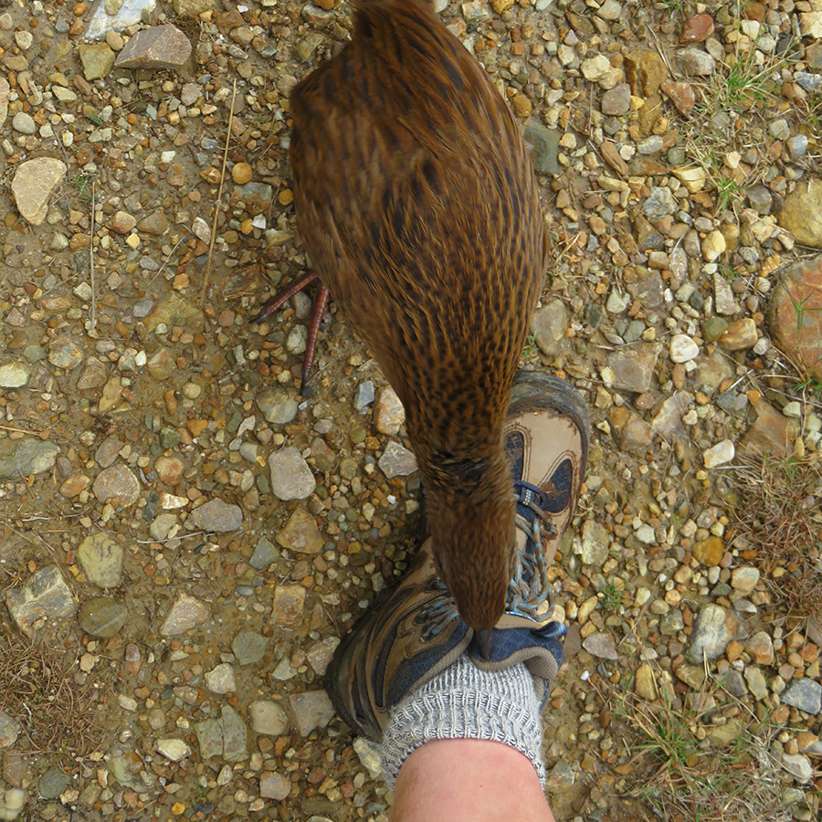

Wel come to VUWTC's Online Journal site. The purpose of this site is to ....
Click on me, to go to VUWTC's for more general info about the club.


The Victoria University of Wellington Tramping Club has been around since 1921, and is a group of keen university students who partake in
a huge variety of trips ranging from day walks around the Wellington hills, week long adventures in the Southern Alps, climbing, and taco dinners.
Link to a registration form to sign up for the VUWTC:
Think this sounds like a bit of you? Sign up to join the VUWTC and join us on our next adventures, through the below form!
Full name: input box
Victoria University ID: input box (numbers only validation)
Email: input box
Which level of study are you currently at VicUni: drop down options
On a scale, how experienced would you say you are in the Great Outdoors? slider
I am not a robot: check box
In this section, I will have a carousel of click-able information cards with a photo and name of each tramp the club has completed.
These cards can be clicked on, and the user will be led to a sub-page will a recount of the tramp/storytime.


Backpack (40–60 litre size for multi-day hiking)
Waterproof/plastic pack liner
Sleeping bag (3–4 season)
First aid kit (including insect repellent, sunscreen, blisterkit, personal medication e.g. antihistamine for allergy towasp stings)
Survival kit (survival blanket, whistle, paper, pencil, highenergy snack food)
Safety equipment relevant to the track and time of year (e.g. map, compass)
Drink bottle (1-2 litre capacity)
Eating and cooking utensils (knife, fork, spoon, plate, cup,pot/pan/billy, cleaning kit, tea towel). Gas cookers are in huts – you do not need to take gas.
Matches or lighter in waterproof container
Toiletries
Torch/flashlight and spare batteries
Rubbish bag
Booking confirmation letter and ID
Back-up toilet option
For multi-day walking you'll need at least one set of clothes to walk in and another dry set to change into at night.
Walking boots or firm footwear (should be comfortable and well broken in)
Socks (wool or polypropylene)
Shorts (quick dry material)
Shirt (wool or polypropylene)
Under layers, top and bottom (wool or polypropylene)
Mid-layers (wool or polar fleece)
Raincoat (waterproof, windproof with hood)
Overtrousers (wind and water proof)
Warm hat and gloves
Sunhat and sunglasses
Extra socks, underwear, shirt/lightweight jersey
INSERT A WINDOW TO GOOGLE MAPS HERE, maybe showing different great walks/tramps around NZ
